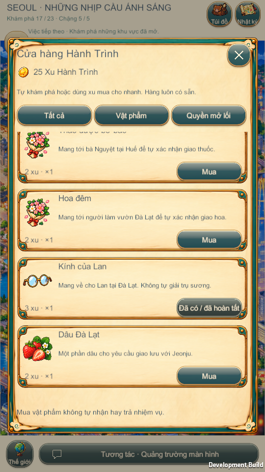

Cửa hàng Hành Trình — Windows Player, 21/10/2026
Ảnh runtime thật, 540×960. Touch được mô phỏng trong Player; không phải bằng chứng Android-device.
Người mới có 0 xu: danh mục vẫn hiện, nút báo số xu còn thiếu. Cửa hàng có bộ lọc và danh sách cuộn.

Shop chung tại Seoul, cuộn tới vật phẩm thành phố khác; vật phẩm độc nhất đã có được khóa để tránh mua thừa.
Focused runtime assertions · Kiểm kê nguồn xu · Phân loại item